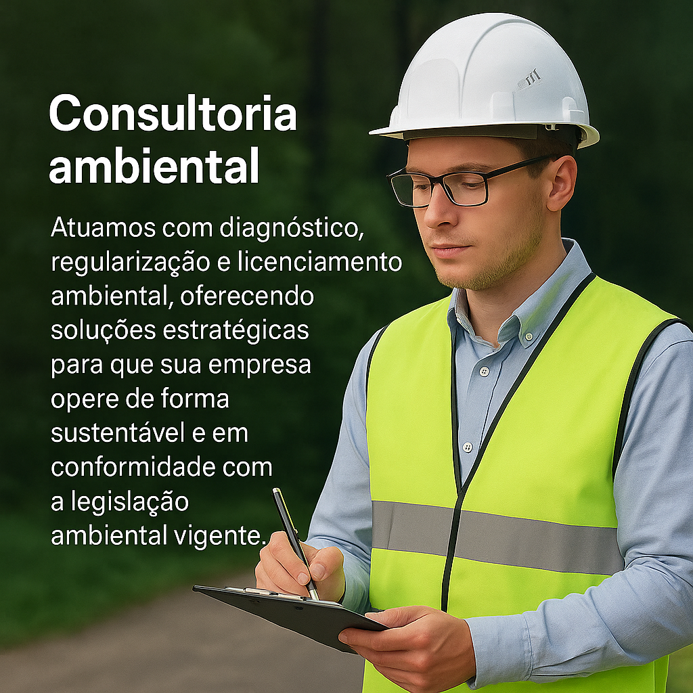

Consultoria Ambiental
Oferecemos soluções completas para garantir que sua empresa atenda às exigências legais e ambientais com segurança, agilidade e responsabilidade.
Serviços Oferecidos
- Assessoria e Consultoria Ambiental: Orientação especializada para identificar e atender às necessidades específicas de licenciamento da sua empresa.
- Inventário Florestal Convencional: Avaliação detalhada das espécies, densidade e estrutura da floresta para suporte ao planejamento e manejo.
- Estudo de Impacto Ambiental e Relatório de Impacto Ambiental (EIA/RIMA)
- Monitoramento Ambiental
- Estudo de Impacto de Vizinhança (EIV)
- Estudo de Tráfego
- Levantamento de Flora
- Plano de Recuperação de Área Degradada (PRAD)
- Relatório de Impactos Ambientais (RIMA)
- Georreferenciamento de Imóveis
- Acompanhamento de Processos: Suporte contínuo do início até a obtenção da licença final, garantindo uma tramitação eficiente e conforme os requisitos legais.